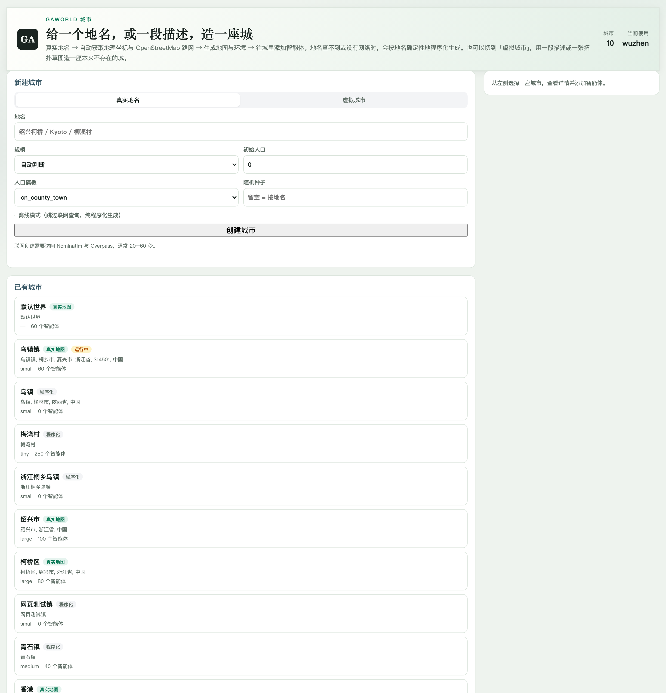

GAWorld 使用指南¶
GAWorld 控制台提供城市管理、居民编辑、仿真运行和研究分析。你可以在本地工作区运行，也可以登录团队部署，在自己的世界中组织实验。
访问控制台¶
本地运行¶
完成 安装 后执行：
gaworld dashboard
打开 http://127.0.0.1:8766。服务地址与端口以启动终端显示的信息为准。
登录团队部署¶
使用管理员提供的控制台地址与账号登录。启用邀请码注册的部署中，使用邀请链接创建账号，再进入自己的世界。
选择世界¶
世界保存居民副本、运行配置和仿真输出。使用控制台中的世界切换入口选择当前世界，再检查城市和居民。多人部署按世界管理运行数据。

环境配置¶
创建工作区¶
gaworld init ./my-world
cd my-world
gaworld dashboard
为不同项目使用不同工作区，便于分别保存城市、配置和实验产物。
配置模型¶
在 配置 → 模型 中选择后端，填写对应服务商的 我的 API Key。测试成功后，设置当前世界的默认模型和日程模型。密钥按账号、协议与完整 Base URL 绑定。字段说明见 模块与参数管理。
创建城市¶
在 城市 中输入地名、选择规模并创建。打开城市详情检查地图与居民，然后选择使用该城市。真实城市与离线地图的操作见 环境模块。


编辑居民¶
打开 Agent Studio，查看身份、人格、状态、记忆与社会关系。保存修改后，在仿真页面选择参与运行的居民。已有表格数据可通过批量导入创建居民，详见 使用智能体。
运行与观察¶
日常仿真¶
选择居民、时长和模型，保存后启动。运行期间查看日志；需要结束当前运行时使用停止操作，再检查已保存结果。
长时段快进¶
在运行设置中开启 长时段快进，选择天、月或年作为步长。快进通过阶段简报推进状态、目标与关系；对照实验的各组使用相同时间尺度。
回放与分析¶
轨迹回放展示居民位置和移动，居民详情展示状态、记忆与关系。进入 Analytics，选择运行，查看状态历史、经济变化和社交结构。目录与导出见 存储与结果访问。
开始研究¶
提出研究问题¶
在 研究工作台 选择研究想法或论文材料，写明研究对象、干预与结果变量。论文材料可以先解读，再审阅变量和假设。

形成方案并运行¶
生成并比较实验设计，选择需要运行的方案。
转成研究，检查预注册协议中的条件、指标、预测与时间范围。
完成跑前检查，批准并运行。
查看各条件和种子的结果、假设判定与报告。
具体步骤见 研究工作台。
工作区目录¶
my-world/
├── gaworld/ # 运行代码与配置
├── data/ # 初始输入、居民与城市
├── site/ # 控制台资源
├── dashboard_config.json # 控制台保存的配置
└── output/ # 仿真与研究产物
常见问题¶
终端找不到 gaworld¶
确认安装与运行使用同一个 Python 环境。激活安装时使用的虚拟环境后，检查包是否已安装：
python -m pip show gaworld
浏览器打不开控制台¶
确认启动控制台的终端仍在运行，并检查终端显示的地址与端口。默认地址为 http://127.0.0.1:8766。如 8766 已被占用，可以指定其他端口：
gaworld dashboard --port 8767
随后打开 http://127.0.0.1:8767。
运行时提示密钥或模型错误¶
回到 配置 → 模型，检查所选服务商的 API Key、模型权限与账户余额，再测试连通性。仿真页面的默认模型和日程模型都需要指向可用后端。